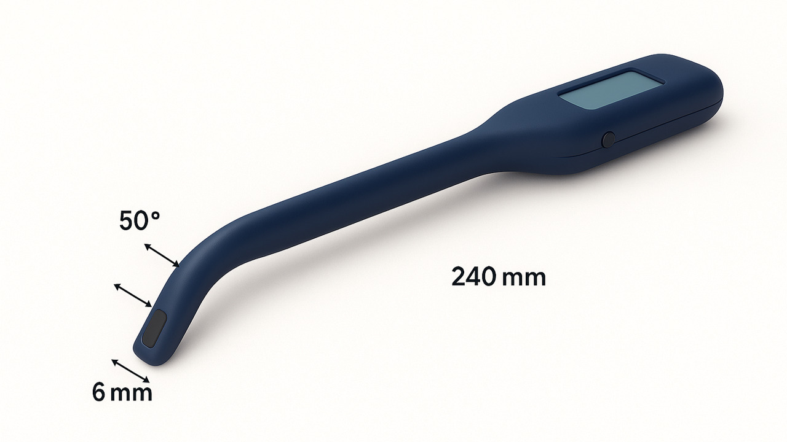
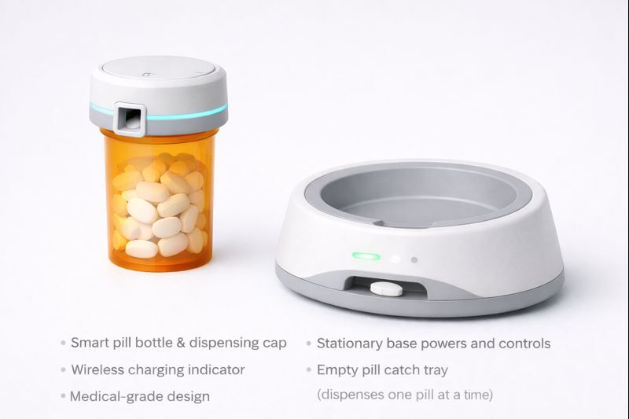
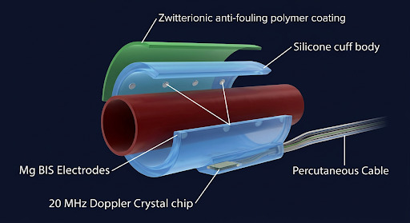
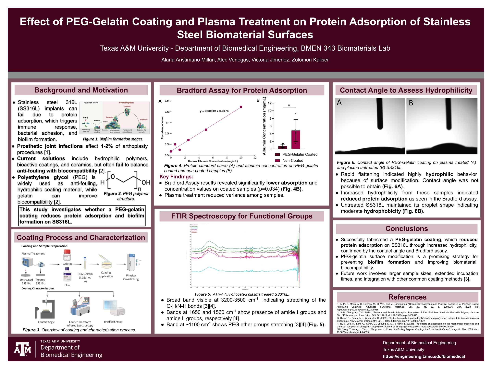

Graduate researcher at Texas A&M University bridging clinical engineering and market strategy.

Analyzed market drivers and sterilization impact for surgical devices, focusing on cost-effective material integrity.

Developing a non-invasive wearable sensor suite that tracks physiological markers of stress and cravings.

Assessed the integration of subcutaneous biosensors with mobile health platforms to reduce acute rejection incidents.

Spectroscopic analysis of protein adsorption rates to inhibit bacterial colonization on orthopedic hardware.